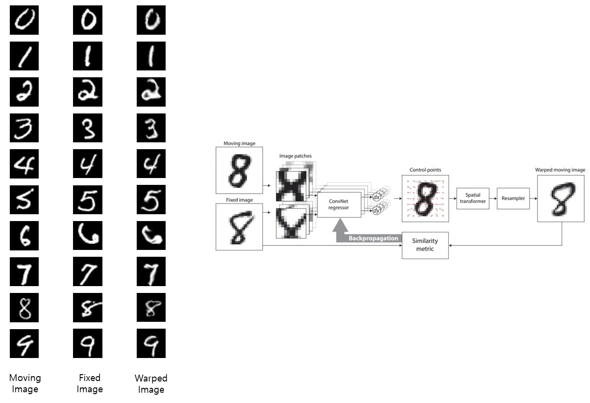
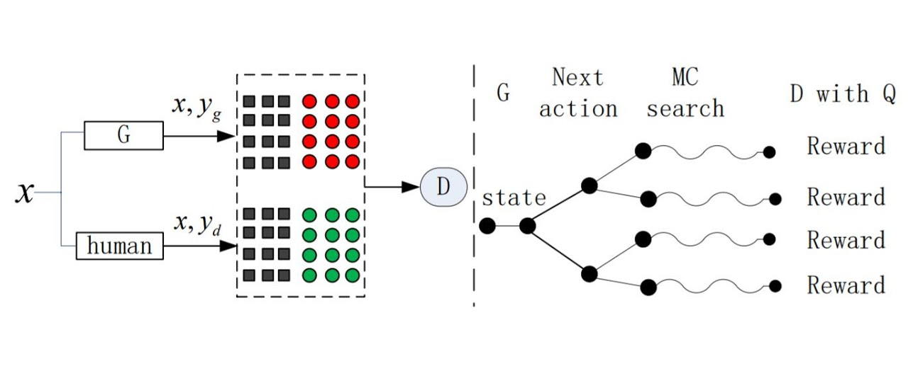

-
DIRNet: Reimplemtation of DIRNet model for unsupervised deformable image registration with PyTorch
[code]
Diagram
 -
Improving NQG with Adversarial Training: A research project about improving the performance of neural question generation by doing adversarial training within the framework of GANs
[code]
Diagram
